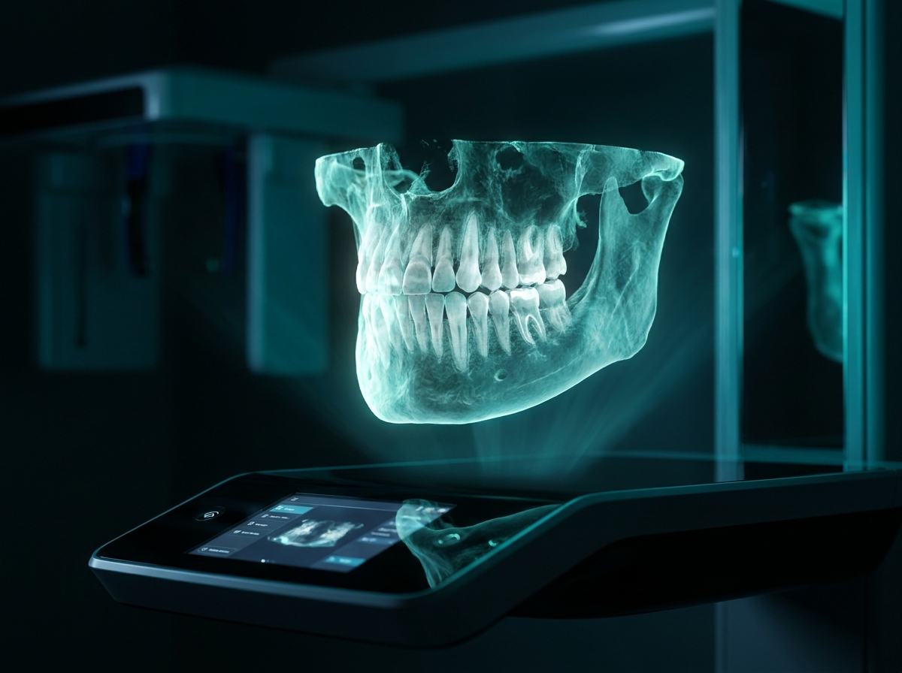
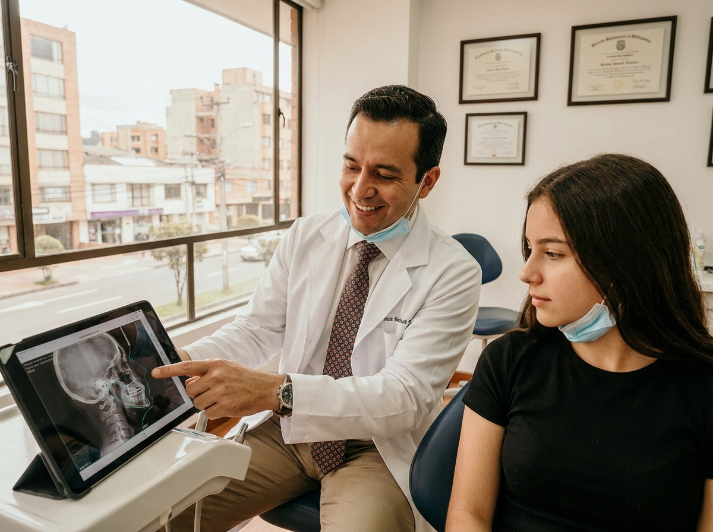

Radiodiagnóstico dentomaxilar
Diagnóstico claro para pacientes, flujo digital para doctores.
Estudios dentales digitales, seguimiento de órdenes y beneficios para doctores referentes en una misma experiencia de Radio Imagen Dentomaxilar.
Servicios principales
Estudios para diagnóstico, planeación y seguimiento dental.
Radiografías 2D
Ortopantomografía, lateral de cráneo, PA/AP de cráneo, Waters, ATM comparativa, carpal y senos paranasales.

02Tomografía 3D
FOV 17x13, 11x10, 8x8 y 5x5 con especificación por maxilar, mandibular o pieza de interés cuando aplica.

03Estudio ortodóntico completo
Paquetes 2D y 3D con radiografías, escaneo intraoral, modelos en resina, fotografía clínica y cefalometría.
Fotografía, modelos y escaneo
Fotografía extraoral e intraoral, modelos en yeso o resina, escaneo intraoral iTero y análisis de modelos.
Análisis cefalométrico NEMOCEF
Rickets, Steiner, Mc. Namara, Tweed, Jaraback y Downs para planeación ortodóntica.
Resultados digitales
Seguimiento de estado, descarga de resultados y consulta de órdenes desde el portal para doctores.
Beneficios para pacientes
Una experiencia más clara antes, durante y después del estudio.
El paciente llega con una orden digital clara y el equipo identifica el estudio solicitado.
La orden queda registrada para seguimiento, evitando depender únicamente de una hoja física.
El doctor puede consultar el estado y descargar resultados cuando estén listos.
Servicios 2D, 3D, fotografía, modelos y análisis cefalométrico en una misma ruta de atención.
Beneficios para doctores
Un programa de socios diseñado para facilitar referencias y fortalecer la consulta.
Cada paciente suma puntos, desbloquea niveles y activa beneficios clínicos, operativos y comerciales.
Entrar al portalSocio Radio Imagen
- Acceso a plataforma iTero
- Xelis Dental Viewer
- Sidexis Dental Viewer
- 10% cashback en estudios de pacientes
- Capacitación 1 a 1
Socio Activo
- Invitación preferente a pláticas
- Presentación personalizada de estudios ortodónticos
- Material digital para explicar estudios
- Soporte para preparar casos
Socio Plata
- Prioridad en seguimiento operativo
- Plantillas personalizadas
- Resumen mensual de referidos
Socio Oro / Diamante
- Reporte mensual personalizado
- Sesión de KPIs
- Planeación conjunta y material co-brandeado
Sucursales y horarios
Agenda o acude a la sucursal más conveniente.
Sucursal principal
Radio Imagen Dentomaxilar
- Lunes a viernes
- 9:00 - 19:00
- Sábado
- 9:00 - 14:00
Sucursal norte
Atención a pacientes y doctores referentes
- Lunes a viernes
- 9:00 - 18:00
- Sábado
- Previa cita
Sucursal sur
Estudios 2D, 3D y seguimiento digital
- Lunes a viernes
- 9:00 - 18:00
- Sábado
- 9:00 - 14:00